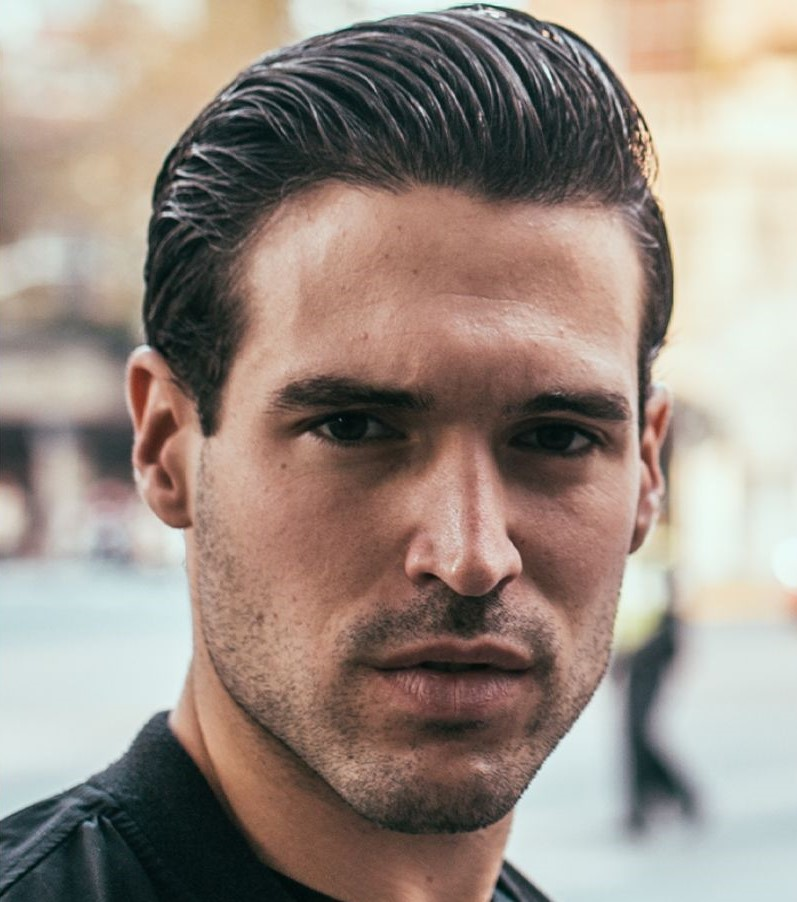
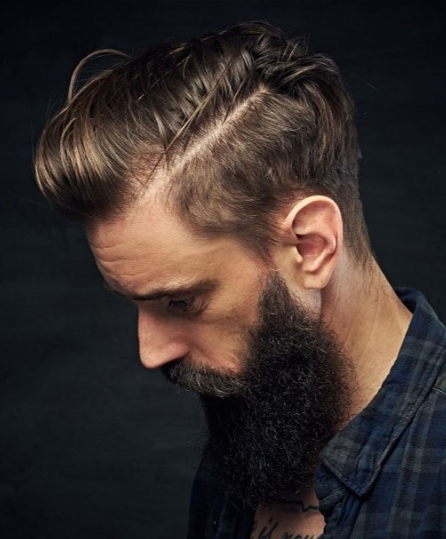
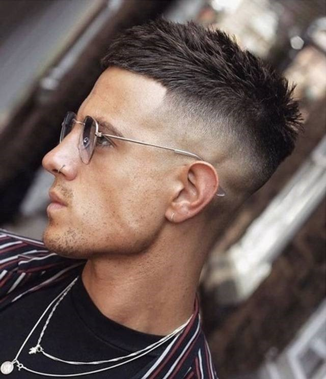
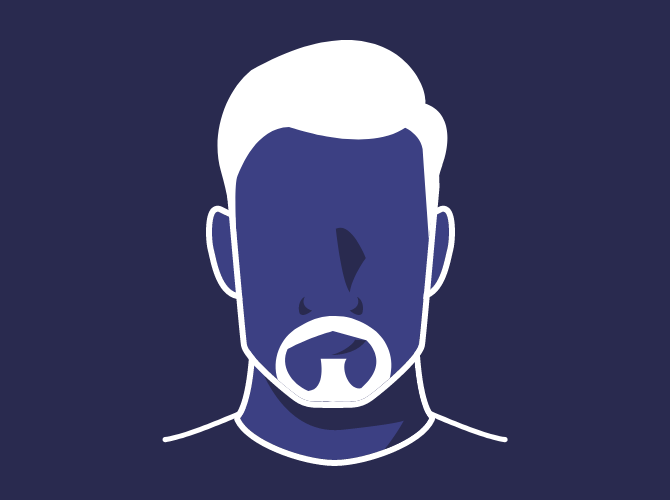
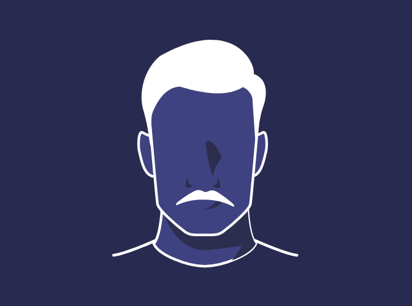
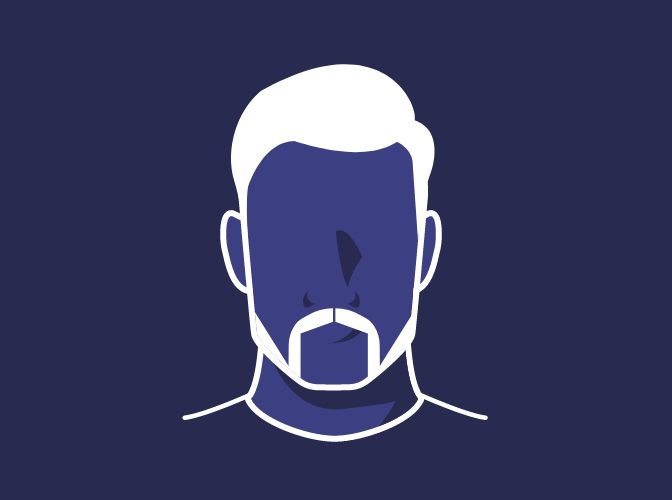

A barba é a sua marca registrada,
o cabelo é a sua coroa.
Na Barbearia Elite, acreditamos que a barba e o cabelo são mais do que apenas pelos. São a moldura do seu rosto, uma expressão da sua personalidade e um símbolo da sua masculinidade. É por isso que dedicamos todo o nosso cuidado para oferecer a você uma experiência única e personalizada.
Nossos diferenciais:
Agende seu horário agora mesmo e venha conhecer a diferença da Barbearia Elite.
o cabelo é a sua coroa.
Na Barbearia Elite, acreditamos que a barba e o cabelo são mais do que apenas pelos. São a moldura do seu rosto, uma expressão da sua personalidade e um símbolo da sua masculinidade. É por isso que dedicamos todo o nosso cuidado para oferecer a você uma experiência única e personalizada.
Nossos diferenciais:
- 🧔🏻 Ambiente acolhedor e descontraído;
- 💈 Profissionais altamente qualificados;
- 🏆 Produtos de alta qualidade;
- 💼 Preços competitivos;
- 🪒 Atendimento personalizado.
Uma Curiosidade sobre as barbearias:
O Barber Pole💈 indicava a presença dos barbeiros-cirurgiões na Idade Média, que faziam além cortes de cabelo e barbas, procedimentos médicos e odontológicos, que sangravam. E essas bandagens ensanguentadas eram penduradas no poste como forma de propaganda, criando o padrão de espiral vermelho e branco quando giravam com o vento.
O Barber Pole💈 indicava a presença dos barbeiros-cirurgiões na Idade Média, que faziam além cortes de cabelo e barbas, procedimentos médicos e odontológicos, que sangravam. E essas bandagens ensanguentadas eram penduradas no poste como forma de propaganda, criando o padrão de espiral vermelho e branco quando giravam com o vento.
Agende seu horário agora mesmo e venha conhecer a diferença da Barbearia Elite.
Cortes
(Se quiser algum, clique em Eu quero esse corte)
Undercut
 Tem a sua principal referência nos cortes militares,
apresentando características únicas, como a nuca e as
laterais mais aparadas com a máquina de cortar cabelo ou a navalha.
Tem a sua principal referência nos cortes militares,
apresentando características únicas, como a nuca e as
laterais mais aparadas com a máquina de cortar cabelo ou a navalha.
-
Mullet
 O mullet consiste em deixar o cabelo um pouco mais comprido atrás,
e mais volumoso no topo, enquanto as laterais são raspadas.
O mullet consiste em deixar o cabelo um pouco mais comprido atrás,
e mais volumoso no topo, enquanto as laterais são raspadas.
Franja Marcada
 Um boa pedida para cabelos lisos e ondulados,
o corte de franja marcada consiste em jogar todo o cabelo na parte central da cabeça para a frente.
Um boa pedida para cabelos lisos e ondulados,
o corte de franja marcada consiste em jogar todo o cabelo na parte central da cabeça para a frente.
Degradê Clássico
Também conhecido como Americano ou Fade.
Nesse estilo de cabelo as laterais devem ser raspadas ou mais baixas que o topo da cabeça, formando justamente o efeito de degradê.
Militar
 Também conhecido como ‘crew cut’, o corte militar é certeiro para quem busca um curtinho prático para o dia a dia.
Também conhecido como ‘crew cut’, o corte militar é certeiro para quem busca um curtinho prático para o dia a dia.
Ele recebe esse nome por ter sido popularizado pelos soldados americanos nos anos 30.
Taper fade
O estilo de cabelo que ganhou famosos como Neymar é um modelo de cabelo que super combina com fios crespos e cacheados, valorizando a textura natural desse tipo de cabelo.
Old Money
 Faz referência ao estilo dos herdeiros de famílias que vivem uma vida luxuosa de gerações. Um corte mais tradicional, que ultrapassa os cabelos e chega também no estilo de se vestir com roupas refinadas e formais.
Pompadour
 O topete do astro Elvis Presley ficou extremamente conhecido na década de 50 e faz sucesso até hoje.
A ideia é deixar o cabelo cortado de forma tradicional nas laterais, enquanto o topo se caracteriza por uma movimentação volumosa e super estilosa.
Razor Part
 O nome significa algo como "repartido com navalha", remetendo ao que o corte propõe.
O razor part aposta em uma linha divisória em uma das laterais do cabelo, criada com o instrumento.
O nome significa algo como "repartido com navalha", remetendo ao que o corte propõe.
O razor part aposta em uma linha divisória em uma das laterais do cabelo, criada com o instrumento.
Caesar
 Inspirado no imperador romano Caio Júlio César. Este estilo de cabelo conta com uma franja reta e curta na frente, porém com as laterais mais baixas e o topo com um pouco de volume.
Barbas
(Se quiser alguma, clique em Eu quero essa barba)
Barba Circular
 Também conhecida como cavanhaque, é uma faixa no queixo e um bigode que se juntam e formam um círculo.
Ideal para estilos de cabeça Quadradas.
-
Barba Van Dyke
 Foi inspirada no pintor Anthony Van Dyke.
Foi inspirada no pintor Anthony Van Dyke.
Nela o bigode e o cavanhaque não se encontram.
Ideal para estilos de cabeça Redondas.
Barba Clássica
 Bigode original e clássico.
Tem um visual versátil e icônico. Ele é simples, limpo e bonito.
Ideal para estilos de cabeça Oval.
Barba Pistoleiro
 Costeletas alargadas com um bigode ferradura. Dando um estilo de "pistoleiro" para quem as usa.
Ideal para estilos de cabeça Retangulares.
Nenhum desses te agradou? Então converse conosco,
escolha seu próprio corte / barba
e agende já um horário.